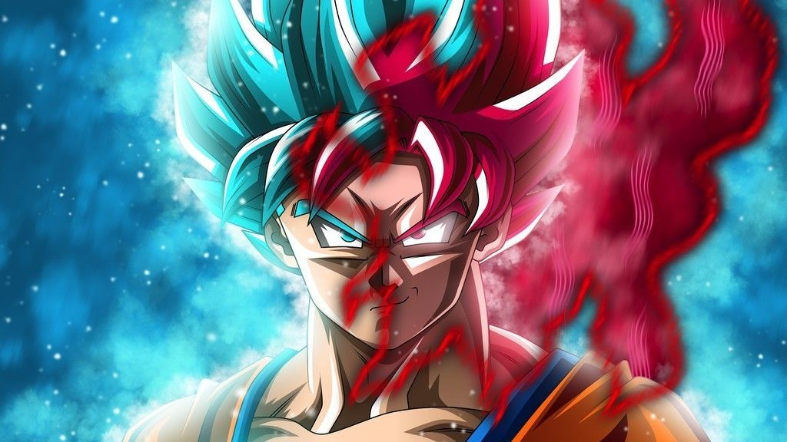
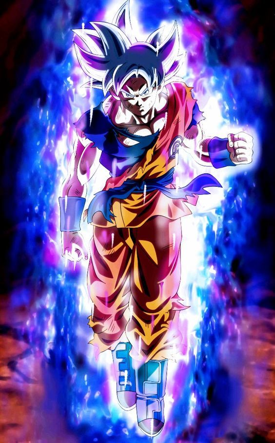
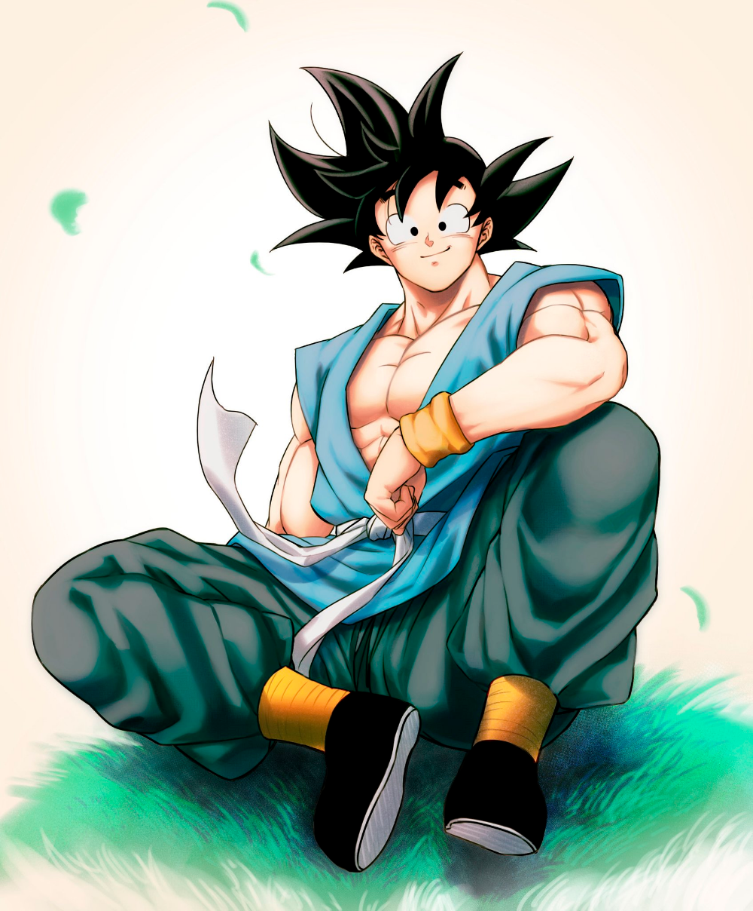
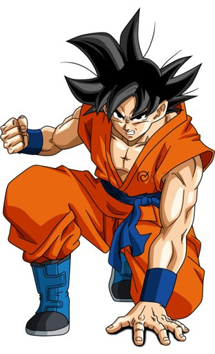
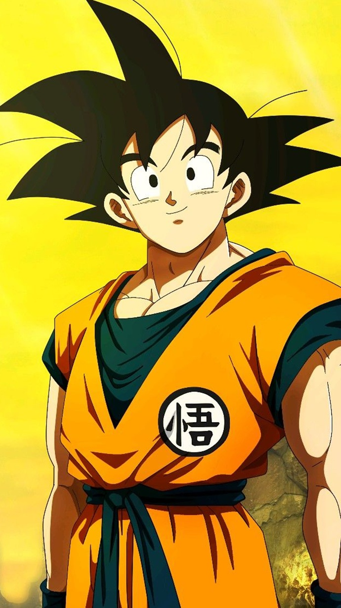
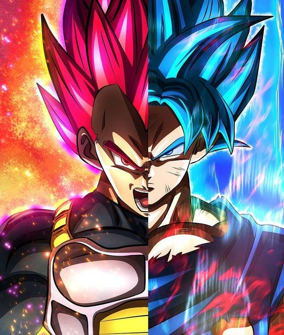

Son Goku

Goku é membro de uma raça fictícia de extraterrestres,
os Saiyajins. Logo após seu nascimento, Goku é enviado à Terra
por seus pais Bardock e Gine para sobreviver à destruição do Planeta Vegeta,
como revelado em Dragon Ball Super: Broly.
Encontrado e criado pelo eremita Son Gohan, Goku passa a
ter como objetivo se tornar mais forte, simplesmente pelo prazer da tarefa.
Dragon Ball (1986–1989)
Dragon Ball Z (1989–1996)
Dragon Ball GT (1996–1997)
Dragon Ball Kai (2009–2015)
Dragon Ball Super (2015–2018)
Super Dragon Ball Heroes (2018 - presente)
Para saber mais




